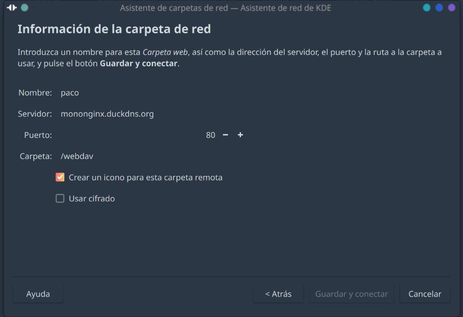
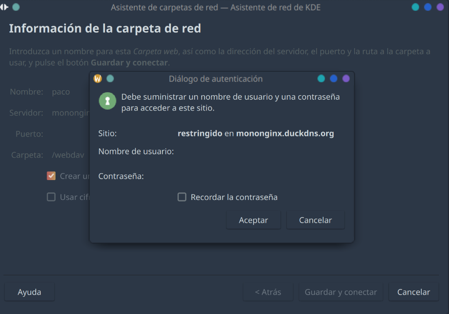
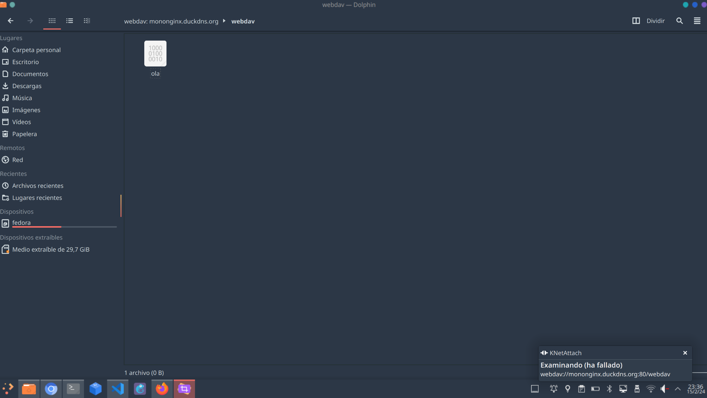
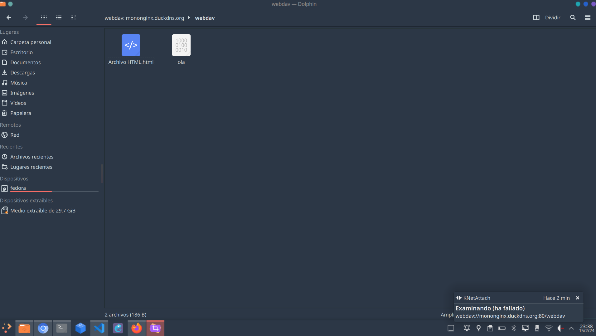
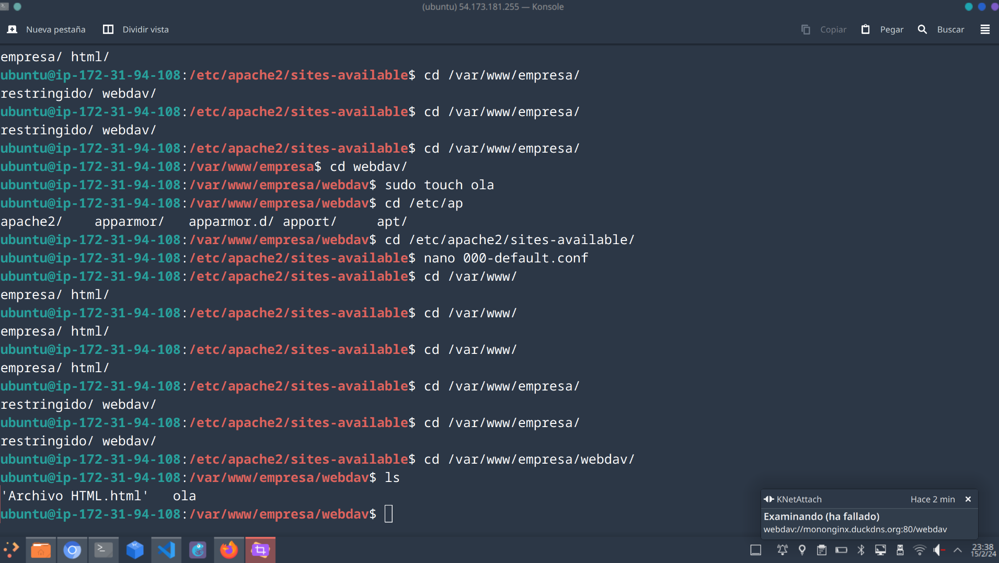
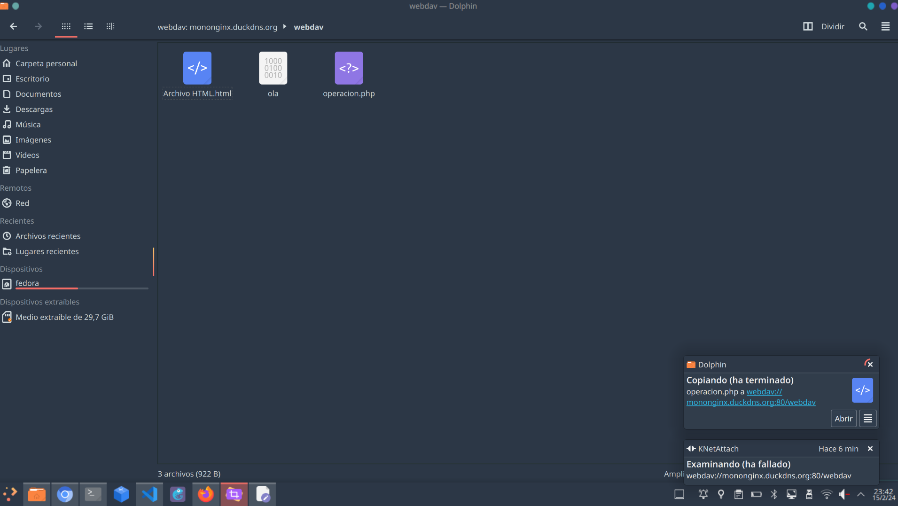
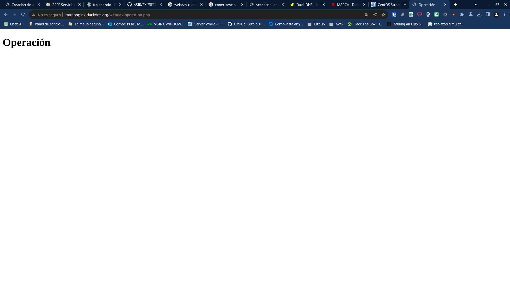

mkdir /var/www/empresa/webdav
chown www-data:www-data -R /var/www/empresa/webdav
a2enmod dav dav_fs
sudo systemctl restart apache2.service
<VirtualHost *:80>
# The ServerName directive sets the request scheme, hostname and port that
# the server uses to identify itself. This is used when creating
# redirection URLs. In the context of virtual hosts, the ServerName
# specifies what hostname must appear in the request's Host: header to
# match this virtual host. For the default virtual host (this file) this
# value is not decisive as it is used as a last resort host regardless.
# However, you must set it for any further virtual host explicitly.
ServerName http://mononginx.duckdns.org
ServerAdmin webmaster@localhost
DocumentRoot /var/www/empresa
# Available loglevels: trace8, ..., trace1, debug, info, notice, warn,
# error, crit, alert, emerg.
# It is also possible to configure the loglevel for particular
# modules, e.g.
#LogLevel info ssl:warn
ErrorLog ${APACHE_LOG_DIR}/error.log
CustomLog ${APACHE_LOG_DIR}/access.log combined
# For most configuration files from conf-available/, which are
# enabled or disabled at a global level, it is possible to
# include a line for only one particular virtual host. For example the
# following line enables the CGI configuration for this host only
# after it has been globally disabled with "a2disconf".
#Include conf-available/serve-cgi-bin.conf
<Directory "/var/www/empresa/restringido">
AuthType Digest
AuthName "restringido"
AuthUserFile "/etc/apache2/contra.digest"
Require valid-user
</Directory>
DavLockDB /tmp/DavLock
<Directory /var/www/empresa/webdav>
dav on
Options Indexes FollowSymLinks MultiViews
AllowOverride None
AuthType digest
AuthUserFile "/etc/apache2/contra.digest"
AuthName "restringido"
Require valid-user
</Directory>
</VirtualHost>
Desde el explorador de archivos (Dolphin en mi caso) nos conectaremos al WEBDAV


Y vemos que está el archivo creado

Ahora creamos un archivo en local y vemos que está creado en AWS


Ahora vamos a hacer las pruebas con el php.
apt install php
Movemos el archivo de php

Probamos que funciona
